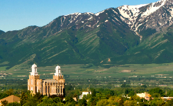

A Little About Me
My name is McKenna. I currently live in Cache Valley, Utah with my husband and 3 year old son, but I'm originally from North Dakota and Kansas. I graduated with an Associates degree from Utah State University in 2018 after serving an LDS mission to the Dakotas. I took a six year break to work and have my son, and I'm now back in school to learn software development. I love to read, spend time with my family, go for bike rides, cook new recipes, craft, and research anything that sparks my curiosity. I'm a huge fan of science, tech, and history, and absolutely love visiting museums and planetariums.
Cache Valley, Utah
Cache Valley, Utah is nestled right on the northern border of Utah. It comprises the city of Logan and many other surrounding small towns. It's home to Utah State University, so it gains an influx of students during the school season. Residents of Logan enjoy skiing at Beaver Mountain, getting a sweet treat at Aggie Ice Cream, and hiking in the beautiful surrounding mountains.